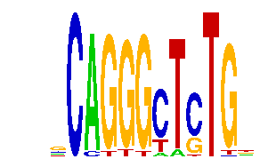

family_7 |
|---|
|  |
| Download PWM |
| Download instances (motifs) |
| Show motif distribution |
Query_ID | Query_Consensus | Subject_Name | Source_DB | Subject_ID | Length | Orientation | Offset | Divergence | Overlap | Subject_Consensus |
|---|
Sequence | Start_position (from start) | Start_position (from end) | Average conservation | Best conservation score | Instance_with_best_CS | Best_Z-score | Instance_with_best_ZS | Strand |
|---|---|---|---|---|---|---|---|---|
| chr1:92931200-92933040 | 1096 | 1108 | 0.00525 | 0.015 | GCAGGGMTSTG. | 15.956948 | GCAGGGMTSTG. | -1 |
| chr1:51348581-51350053 | 1178 | 1190 | 0.00933333 | 0.017 | SCAKGGCTCTG. | 14.438022 | SCAKGGCTCTG. | 1 |
| chr2:166027700-166030700 | 285 | 297 | 0.0861667 | 0.15 | SCAGGGCTYTG. | 13.962296 | SCAGGGCTYTG. | 1 |
| chr13:12375500-12377600 | 733 | 745 | 0.225417 | 0.939 | .CAGGGYTSTG. | 18.642365 | SCAGGGYTCTG. | 1 |
| chr17:71344800-71347124 | 2019 | 2031 | 0.0393333 | 0.066 | .CAGGGYTSTG. | 12.079355 | .CAGGGYTSTG. | -1 |
| chr17:27003900-27006500 | 1861 | 1873 | 0.625083 | 0.962 | .CAGGGCWCTGK | 14.438022 | SCAGGGCWCTG. | -1 |
| chr6:112344600-112347000 | 509 | 521 | 0.00791667 | 0.037 | .CAGGGCWCTGK | 14.438022 | SCAGGGCWCTG. | -1 |
| chr14:55583700-55589300 | 5305 | 5317 | 0.0179167 | 0.11 | .CAGGKCTCTG. | 12.037083 | .CAGGKCKCTG. | -1 |
| chr6:24491305-24493948 | 1265 | 1277 | 0.000666667 | 0.003 | .CAGGGYTSTG. | 12.079355 | .CAGGGYTSTG. | 1 |
| chr18:11389600-11391400 | 1605 | 1617 | 0.169917 | 0.202 | .CAGGKCKCTG. | 13.932716 | .CAGGKCTCTG. | -1 |
| chr1:43201300-43203046 | 1106 | 1118 | 0.00116667 | 0.003 | .CAGGGCWCTGK | 14.438022 | SCAGGGCWCTG. | -1 |
| chr2:35026500-35028500 | 729 | 741 | 0.0185 | 0.066 | .CAGGKCKCTG. | 13.962212 | .CAGGGCTCTG. | 1 |
| chr1:43393669-43394700 | 693 | 705 | 0.0396667 | 0.191 | SCAGGGYTCTG. | 12.079355 | .CAGGGYTSTG. | 1 |
| chr10:30564964-30566700 | 1034 | 1046 | 0.00266667 | 0.006 | SCAGGGCTYTG. | 13.962296 | SCAGGGCTYTG. | 1 |
| chr5:148606000-148607137 | 628 | 640 | 0.000833333 | 0.004 | SCAGGGCTYTG. | 13.962212 | .CAGGGCTCTG. | 1 |
| chr1:58415899-58416900 | 409 | 421 | 8.33333e-05 | 0.001 | .CAGKGCTCTGK | 16.821484 | .CAGKGCTCTGK | 1 |
| chr2:90963200-90967100 | 2867 | 2879 | 0.00258333 | 0.007 | .CAGGGYTSTG. | 12.079355 | .CAGGGYTSTG. | 1 |
| chr4:133857200-133859010 | 1389 | 1401 | 0.004 | 0.007 | .CAGGGYTSTG. | 12.079355 | .CAGGGYTSTG. | 1 |
| chr16:91853000-91854900 | 707 | 719 | 0.00591667 | 0.016 | .CAGGGCTCTG. | 13.932716 | .CAGGKCTCTG. | 1 |
| chr14:63879243-63880600 | 1337 | 1349 | 0.00075 | 0.003 | GCAGGGCTSTK. | 15.956948 | GCAGGGCTSTK. | 1 |
| chr2:49926100-49928200 | 1738 | 1750 | 0.00775 | 0.013 | .CAGGGYTSTG. | 12.079355 | .CAGGGYTSTG. | -1 |
| chr17:81891400-81892420 | 516 | 528 | 0.000333333 | 0.001 | .CAGGGMTCTGK | 13.962296 | SCAGGGCTYTG. | 1 |
| chr2:76736449-76738500 | 596 | 608 | 0.4395 | 0.997 | .CAGGGYTSTG. | 12.079355 | .CAGGGYTSTG. | 1 |
| chr12:104600200-104602100 | 1831 | 1843 | 0.0114167 | 0.022 | .CAGKGCTCTGK | 16.821484 | .CAGKGCTCTGK | 1 |
| chr1:72981600-72984300 | 2202 | 2214 | 0.16 | 0.482 | .CMGGGCTCTGK | 16.888458 | GCMGGGCTSTG. | 1 |
| chr8:35030809-35033700 | 1552 | 1564 | 0.0198333 | 0.033 | SCAGGGYTCTG. | 12.079355 | .CAGGGYTSTG. | -1 |
| chr2:68253215-68256600 | 3042 | 3054 | 0.0035 | 0.008 | .CAGKGCTCTGK | 16.821484 | .CAGKGCTCTGK | 1 |
| chr9:77192100-77194257 | 1629 | 1641 | 0.00166667 | 0.005 | SCAKGGCTCTG. | 14.438022 | SCAKGGCTCTG. | -1 |
| chr19:6384905-6387600 | 2642 | 2654 | 0.0005 | 0.002 | GCMGGGCTSTG. | 16.888458 | GCMGGGCTSTG. | 1 |
| chr5:123021644-123022900 | 543 | 555 | 0.00108333 | 0.003 | GCAGGGMTSTG. | 14.104345 | SCAGGGMTCTG. | 1 |
| chr8:64252000-64253540 | 1054 | 1066 | 0.00525 | 0.018 | GCAGGGMTSTG. | 15.956948 | GCAGGGMTSTG. | 1 |
| chr5:100800387-100801387 | 456 | 468 | 0.0595833 | 0.091 | .CAGGGYTSTG. | 12.079355 | .CAGGGYTSTG. | 1 |
| chr4:133873200-133876300 | 1139 | 1151 | 0.00775 | 0.017 | GCAGGGMTSTG. | 15.462914 | SCAGGGCTSTG. | 1 |
| chr9:24772900-24774281 | 1010 | 1022 | 0.00591667 | 0.049 | .CAGGGYTSTG. | 16.888458 | GCMGGGCTSTG. | 1 |
| chr8:13242700-13244900 | 146 | 158 | 0.0569167 | 0.105 | .CAGGKCTCTG. | 12.037083 | .CAGGKCKCTG. | 1 |
| chr2:76736449-76738500 | 757 | 769 | 0.00109091 | 0.007 | GCAGGGMTSTG. | 14.104345 | .CAGGGMTCTGK | 1 |
| chr2:35038114-35039114 | 99 | 111 | 0.00466667 | 0.03 | GCMGGGCTSTG. | 12.079355 | .CAGGGYTSTG. | 1 |
| chr13:45824900-45826600 | 1214 | 1226 | 0.00258333 | 0.01 | GCAGGGCTSTK. | 14.438022 | SCAKGGCTCTG. | 1 |
| chr1:72981600-72984300 | 1188 | 1200 | 0.0819167 | 0.122 | .CAGGKCKCTG. | 14.438022 | SCAGGGCWCTG. | -1 |
| chr8:34902160-34904200 | 1853 | 1865 | 0.00933333 | 0.034 | GCAGGGCTSTK. | 15.956948 | GCAGGGCTSTK. | 1 |
| chr3:65238900-65240700 | 1446 | 1458 | 0.11975 | 0.364 | SCAGGGCTYTG. | 13.962296 | SCAGGGCTYTG. | 1 |
| chr11:54861300-54862395 | 410 | 422 | 0.00516667 | 0.009 | .CAGKGCTCTGK | 16.821484 | .CAGKGCTCTGK | 1 |
| chr8:64311000-64313700 | 1594 | 1606 | NA | NA | .CAGGGYTSTG. | 12.079355 | .CAGGGYTSTG. | 1 |
| chr17:27009000-27012400 | 3191 | 3203 | 0.00325 | 0.009 | SCAGGGCWCTG. | 14.438022 | .CAGGGCWCTGK | 1 |
| chr18:5073600-5077590 | 1265 | 1277 | 0.0005 | 0.002 | .CAGGGMTCTGK | 13.962296 | SCAGGGCTYTG. | 1 |
| chr10:90904800-90906285 | 1342 | 1354 | 0.273 | 0.751 | .CAGGGCTCTG. | 14.438022 | .CAGGGCWCTGK | 1 |
| chr14:55626500-55627900 | 975 | 987 | 0.000833333 | 0.004 | .CMGGGCTCTGK | 12.745775 | .CMGGGCTCTGK | -1 |
| chr8:13249200-13250600 | 47 | 59 | 0.16675 | 0.291 | SCAGGGCTYTG. | 12.037083 | .CAGGKCKCTG. | 1 |
| chr6:18601300-18602819 | 1112 | 1124 | 0.02625 | 0.034 | .CAGGGYTSTG. | 14.104345 | .CAGGGMTCTGK | -1 |
| chr8:42084177-42086300 | 378 | 390 | 0.00608333 | 0.015 | .CAGGGCTCTG. | 14.104345 | SCAGGGMTCTG. | 1 |
| chr9:24569694-24570694 | 398 | 410 | 0.0793333 | 0.926 | SCAGGGYTCTG. | 15.462914 | SCAGGGCTSTG. | 1 |
| chr17:27003900-27006500 | 1214 | 1226 | 0.0119167 | 0.024 | SCAGGGCTCTS. | 14.438022 | SCAGGGCTCTS. | 1 |
| chr14:35341300-35343200 | 985 | 997 | 0.291417 | 0.549 | SCAKGGCTCTG. | 14.438022 | SCAGGGCWCTG. | 1 |
| chr3:101340000-101341300 | 227 | 239 | 0.00858333 | 0.025 | .CAGGGYTSTG. | 12.079355 | .CAGGGYTSTG. | 1 |
| chr2:156449700-156452800 | 595 | 607 | 0.991 | 1 | GCAGGGCTSTK. | 16.888458 | GCMGGGCTSTG. | 1 |